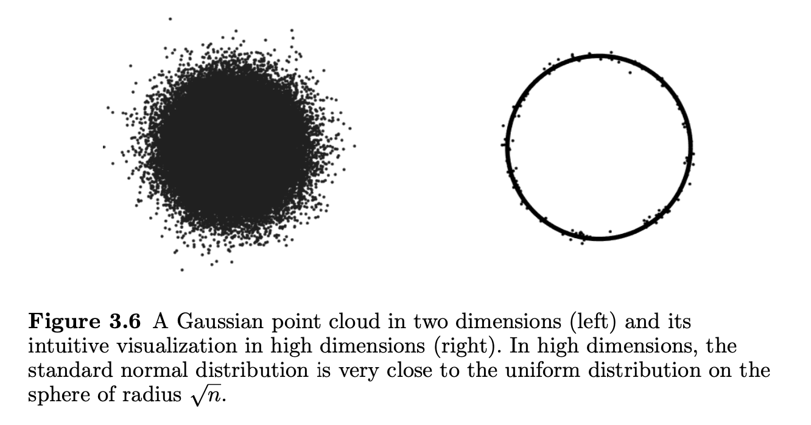
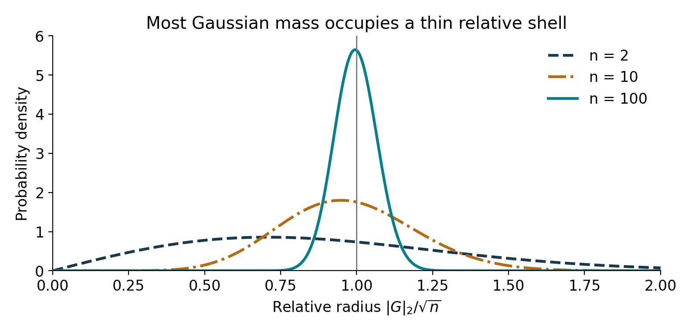

These notes support STAT 709 at the University of Wisconsin–Madison. Use them alongside the cited textbooks; corrections and questions are welcome.
Targets. Scalar concentration becomes a tool for vectors when we decide what to measure: all graph degrees, every covariance entry, a Euclidean norm, or finitely many pairwise distances.
Strategy. The recurring steps are to control one quantity, count the quantities of interest, and apply a union bound.
Scope. The Gaussian and convex concentration statements, their matrix-norm example, and random projection are mid priority; the general concentration proofs and extensions remain optional.
Recap from earlier lecturesFrom Lecture 14: exponential tail bounds · 1 min
Reminder only: this block introduces no new exam requirements.
Subgaussian variables. The \(\psi_2\) norm controls Gaussian-type tails and moment growth. Used in Sections 1–3.
Subexponential variables. The \(\psi_1\) norm controls exponential-type tails. Used in Section 1 and Section 3.
Hoeffding and Bernstein. Independent sums satisfy bounds determined by their tail scales. Used in Sections 1–3.
Squares and centering. A subgaussian square is subexponential; centering changes the norm only by a constant factor. Used in Section 1 and Section 3.
Union bound. \(P(\bigcup_j A_j)\le\sum_jP(A_j)\) turns individual bounds into simultaneous guarantees. Used in Sections 1 and 4.
Learning goals
Apply tail bounds and union bounds to simultaneous events.
Interpret concentration of the norm of a random vector.
State the selected Gaussian and Talagrand concentration results; their proofs remain optional.
Choose a projection dimension for preserving finitely many pairwise distances.
In this lecture, we will continue studying concentration inequalities and introduce some fundamental high-dimensional phenomena. For a random vector \(X = (X_1,\ldots,X_n)\) with independent components, the previous lecture shows how to control \(\langle a, X \rangle\) for a given nonrandom vector \(a\).
As before, we use \(c\) or \(C\) to denote a positive absolute constant.
1. Examples of concentration inequalities
Here the theorem gives the stated fixed confidence of 0.9. In an asymptotic statement, “with high probability” usually means probability tending to one; that stronger statement requires a corresponding choice of the constants or growth assumptions.
Let us first recall concentration inequalities we learned in the previous lecture by looking at some examples.
Random graphs.
The Erdős-Rényi graph \(G \sim G(n,p)\) is a random graph with \(n\) vertices where we randomly draw an edge between vertices \(i\) and \(j\) with probability \(p\). In other words, for \(1 \le i < j \le n\), we have an independent Bernoulli random variable \(A_{ij} \sim \mathrm{Bern}(p)\). Set \(A_{ji}=A_{ij}\) and \(A_{ii}=0\). The degree of vertex \(i\) is \[d_i = \sum_{j \neq i} A_{ij}.\] The expected degree for each \(i\) is \(\E [d_i] = (n-1)p\), and we denote \(d = (n-1) p\).
There is an absolute constant \(C\) such that the following holds. Suppose the expected degree satisfies \(d \ge C (\log n)^{2}\). Then, with probability1 at least \(0.9\) all degrees of \(G\) are between \(0.9d\) and \(1.1d\).
We can replace \(0.9\) by \(0.99\), and \(0.9d\) and \(1.1d\) closer to \(d\) (e.g., \(0.99d\), \(1.01d\)). The same conclusion holds with a larger constant \(C\).
Proof. To prove this inequality, we apply Bernstein’s inequality for bounded random variables (Hoeffding’s inequality is too crude): for any \(i\),
\[\mathbb{P}\left(\big|d_i - d| \ge \frac{C_1(\sigma + M)}{\delta}\right) \le 2\exp\left(-\min\left(\frac{1}{\delta}, \frac{1}{\delta^2}\right)\right), \qquad \text{for any}~\delta > 0,\]
(1)where \(C_1\) is a certain constant, \(\sigma = (\Var(d_i))^{1/2}\) and \(M \le 1\) is a simple upper bound on \(|A_{ij} - \E[A_{ij}]|\). Note \(\sigma = ((n-1)p(1-p))^{1/2} \le d^{1/2}\). We pick \(\delta = (a\log n)^{-1}\) where \(a=6\) to get \[\mathbb{P}\left(\big|d_i - d| \ge \frac{C_1(\sqrt{d}\, + 1)}{\delta}\right) \le 2\exp\left(-\min\left(\frac{1}{\delta}, \frac{1}{\delta^2}\right)\right) \le2n^{-a}\quad\text{when }a\log n\ge1,\] Note \(C_1\frac{\sqrt{d}\, + 1}{\delta} = O(\sqrt{d} \log n)\). Thus, under the assumption \(d \ge C(\log n)^2\) for a large \(C\), we have \(C_1\frac{\sqrt{d}\, + 1}{\delta} \le 0.1 d\). Thus, by the union bound, \[\mathbb{P}\left(\exists~i, ~\big|d_i - d| \ge 0.1 d \right) \le \sum_{i=1}^n\mathbb{P}\left(\big|d_i - d| \ge \frac{C_1(\sigma + M)}{\delta}\right) \le 2n^{1 - a}\] For \(n\ge2\) and \(a=6\), the right-hand side is at most \(2\cdot2^{-5}<0.1\); enlarging the constant in the degree assumption ensures the radius comparison above. ◻
The coarser inverted radius used above is not optimal. The direct bounded Bernstein inequality, or a multiplicative Chernoff inequality, lets us replace \((\log n)^2\) by \(\log n\) in the statement of Proposition 1. See [2][Prop. 2.4.1] for details.
Covariance matrix.
Observations. Let \(y_1,\ldots,y_n \stackrel{\iid}{\sim} Y \in \R^d\) be i.i.d. random vectors with zero mean and subgaussian components, namely \(\E Y = 0\) and \(\max_{1 \le j \le d} \| Y_j \|_{\psi_2} \le K\).
Integrability. All coordinate products are integrable: Cauchy–Schwarz gives \(\E|Y_jY_m|\le(\E Y_j^2\E Y_m^2)^{1/2}<\infty\).
Population covariance. Thus the covariance matrix exists and is denoted by \(\Sigma = \mathrm{Cov}(Y)\) which is a \(d\times d\) matrix.
Empirical covariance. The empirical covariance matrix is
\[\hat \Sigma = \frac{1}{n} \sum_{i=1}^n y_i y_i^\top\] We can apply Bernstein’s inequality to bound the estimation error under the max norm: \[\big\| \hat \Sigma - \Sigma \big\|_{\max} := \max_{1\le j,m \le d} \big| \hat \Sigma - \Sigma \big|_{j,m} = \max_{1\le j,m \le d} \Big| \frac{1}{n} \sum_{i=1}^n \big( [y_i]_j [y_i]_m - \E[ [y_i]_j [y_i]_m]\big) \Big|\,.\]
Independent observations. For each fixed pair \((j,m)\), the summands are independent across observations \(i\).
Dependent coordinates allowed. Coordinates within an observation need not be independent.
Tail scale. The product and centering bounds give \(\|Y_jY_m-\E(Y_jY_m)\|_{\psi_1}\le4K^2\), so Bernstein’s inequality yields
\[P\left( |[\hat\Sigma-\Sigma]_{jm}|\ge tK^2\right) \le 2 \exp \left(-cn \min(t^2, t) \right)\,.\] We choose \(t = C \sqrt{(\log d)/ n}\) with a sufficiently large \(C \ge 1\) so that \(cn t^2 \ge 4\log d\). Assume \(d\ge2\) and \(n\ge C^2\log d\), so \(t\le1\) and hence \(\min(t^2, t) = t^2\). This yields \[P\left( |[\hat\Sigma-\Sigma]_{jm}|\ge CK^2\sqrt{\frac{\log d}{n}} \right) \le 2 \exp(- 4 \log d) = 2d^{-4}.\] By applying a union bound over the choice of \(j,m\), we get \[P\left(\big\| \hat \Sigma - \Sigma \big\|_{\max}\ge CK^2\sqrt{\frac{\log d}{n}} \right) \le 2d^{-2}.\] Note that by adjusting the constant, we can make the exponent \(-2\) in \(d^{-2}\) smaller (like \(-10\), \(-100\), etc.)
Uniform control.
A union bound converts one-entry concentration into simultaneous control of graph degrees or covariance entries. The number of quantities contributes a logarithmic factor through the chosen failure probability.
See Exercise 1 in Section 7 for the full statement and complete solution.
2. Two general concentration inequalities
Low priority — not examined: Two general concentration inequalities
It is possible to generalize the concentration inequalities beyond a linear combination of independent random variables. The following result is a classic concentration inequality for general Lipschitz functions, although it only applies to Gaussian random variables instead of subgaussian random variables.
Let \(X_1, X_2, \ldots X_n \stackrel{\iid}{\sim} \mathcal{N}(0, 1)\). Let \(F: \mathbb{R}^n \to \mathbb{R}\) be an \(L\)-Lipschitz function, i.e., \(|F(x) - F(y)| \le L\|x - y\|\). Then \[\|F(X_1, \ldots, X_n) - \mathbb{E}F(X_1, \ldots, X_n)\|_{\psi_2} \le C L\] where \(C\) is a constant.
Low priority — not examined: Gaussian concentration: proof and details
If we consider the special case \(F(x) = \langle a, x \rangle\), then \(F\) is \(\|a\|\)-Lipschitz. This leads to the same bound as in Hoeffding’s inequality.
Proof. Of Theorem 1.
For simplicity, denote \(X=(X_1,\dots,X_n)\), and let \(Y\) be an independent copy. First prove the claim for smooth \(F\) with \(\|\nabla F\|\le L\); convolution approximation extends it to every Lipschitz \(F\), with dominated convergence justified by linear growth and Gaussian exponential integrability. We also introduce the definition \(X_\theta = X\cos \theta + Y\sin \theta\). Using Markov’s inequality and Jensen’s inequality, we obtain \[P(F(X)-\E F(X)>Lt) \leq e^{-\lambda Lt}\E e^{\lambda(F(X)-\E F(X))} \leq e^{-\lambda Lt}\E e^{\lambda(F(X)- F(Y))}.\] Note that \[\frac{d}{d\theta} X_{\theta} = -X\sin\theta + Y\cos\theta\sim N(0,I_n)\] for any \(\theta\in[0,\pi/2]\). A crucial observation is that \(\frac{d}{d\theta} X_\theta\) and \(X_\theta\) are independent, since \((X_\theta, \frac{d}{d\theta} X_\theta)\) is an orthogonal transform of \(X,Y\). Denote \(X'_\theta = \frac{d}{d\theta} X_\theta\).
We use Jensen’s inequality for the integration (viewed as measure integration w.r.t. \(\mathrm{Unif}[0,\pi/2]\)) in the exponentiation and Fubini’s theorem, \[\begin{aligned} \E e^{\lambda[F(Y)-F(X)]} &= \E \exp \Big( \frac{\pi\lambda}{2} \int_0^{\pi/2} (-X\sin\theta + Y\cos\theta)^T\nabla F(X_\theta) \frac{2}{\pi}d\theta \Big) \\ &\leq \frac{2}{\pi} \int_0^{\pi/2} \E e^{\frac{\pi\lambda}{2} (-X\sin\theta + Y\cos\theta)^T\nabla F(X_\theta)}d\theta \qquad \text{(by Jensen and Fubini)} \\ &= \frac{2}{\pi} \int_0^{\pi/2} \E e^{\frac{\pi\lambda}{2} (X'_\theta)^T\nabla F(X_\theta)}d\theta \\ &= \frac{2}{\pi} \int_0^{\pi/2} \mathbb{E} e^{\frac{\lambda^2 \pi^2 \|\nabla F(X_\theta)\|^2}{8}} d\theta \qquad \text{(by independence)} \\ &\leq e^{\frac{\lambda^2 \pi^2 L^2}{8}}. \qquad \qquad \qquad \text{(by Lipschitz assumption)} \end{aligned}\]
Symmetry. The difference \(F(X)-F(Y)\) has the same distribution as \(F(Y)-F(X)\) by exchanging the independent copies. The preceding bound therefore applies to the MGF in the Markov step.
Constant case. If \(L=0\), \(F\) is constant.
Optimize. Otherwise choose \(\lambda=\frac{4t}{\pi^2L}\) to obtain
\[P(F(X)-\E F(X)>Lt) \leq e^{-\frac{2t^2}{\pi^2}}.\] Applying the same argument to \(-F(X)\), we can derive that \[P(-F(X) + \E F(X)>Lt) \leq e^{-\frac{2t^2}{\pi^2}},\] and therefore \[P(|F(X)-\E F(X)|>Lt) \leq 2e^{-\frac{2t^2}{\pi^2}}.\] ◻
Suppose that \(Y\) is a matrix of i.i.d. standard normal entries. Let \(\| \cdot \|\) be either the Frobenius norm or the matrix operator norm. Then, \[P\big( \big| \|Y\| - \mathbb{E} \|Y\| \big| > t \big) \le 2 e^{-ct^2}, \qquad \text{for all}~t > 0.\]
Low priority — not examined: Matrix norms: explanation
The above inequality follows from Theorem 1 and the observation that \(|f(Y) - f(\tilde Y)| \le f(Y - \tilde Y)\) with \(f(Y) = \| Y \|\) (due to triangle inequality in the definition of a norm). Remarkably, the deviation of \(\|Y\|\) from its expectation is \(O(1)\), which does not depend on the dimensions of the matrix \(Y\). As we will learn in the next lecture, \(\mathbb{E} \|Y\|\) generally scales with the matrix dimension. In the special case of vectors \(Y \in \R^n\), from homework problems we have learned \(\|Y\| = \sqrt{n} + O_P(1)\) (see also next section), so indeed \(\|Y\|\) concentrates around its mean.
What if we don’t have Gaussian distributions? Talagrand’s concentration inequality.
Suppose that \(X_1,\ldots, X_n\) are independent random variables satisfying \(\max_i |X_i| \le K\). Denote \(X=(X_1,\ldots,X_n)\). Let \(F:\R^n\to\R\) be a convex \(L\)-Lipschitz function. Then
\[P\big( | F(X) - \mathbb{E} [F(X)]| \ge tL \big) \le C \exp\Big( -\frac{ct^2}{K^2}\Big) \qquad \text{for any}~t > 0.\]
(2)Low priority — not examined: Talagrand concentration: proof and extension
See [1] (Theorem 2.1.13) for a proof. This theorem says that for a bounded random vector with independent coordinates, \(F(X) - \mathbb{E} [F(X)]\) is subgaussian with norm bounded by \(O(KL)\).
In place of Gaussianity, we now require bounded independent coordinates and convexity. For independent variables \(\xi_i\) with \(\max_i\|\xi_i\|_{\psi_2}\le K\), one practical extension uses truncation: \[X_i = \xi_i \mathbf{1}\{ |\xi_i| \le \tau_n \}\] at appropriate threshold \(\tau_n\). For example, choose \(\tau_n = C_q K\sqrt{\log n}\) for subgaussian \(\xi_i\) allows us to have \(P(X_i = \xi_i, \forall~i) \ge 1 - C'n^{-q}\) for any \(q > 0\). For convex \(F\), we may then apply Talagrandś concentration inequality to \(X_i\), obtain the concentration inequality of \(F(X)\), and control the change in center using \[|\E F(X)-\E F(\xi)|\le L\E\|X-\xi\|_2 \le L\Big(\sum_i\E[\xi_i^2\mathbf1\{|\xi_i|>\tau_n\}]\Big)^{1/2}.\] Integrating the subgaussian tail makes this small by increasing \(C_q\). Together with the truncation failure probability, this transfers the bound to \(F(\xi)\), at the cost of the logarithmic scale in \(\tau_n\).
Low priority — not examined: Practice: The norm is Lipschitz
See Exercise 2 in Section 7 for the full statement and complete solution.
3. Norm of random vectors
Suppose that \(X = (X_1,\ldots,X_n)\) is a random vector where \(X_1,\ldots,X_n\) are independent random variables with \(\E [X_i] = 0\) and \(\Var(X_i) = 1\). We are interested in the Euclidean norm \(\| X \|\). Let’s gather some results about \(\| X \|\) we have proved so far.
For i.i.d. coordinates, by the LLN and continuous mapping theorem, \(n^{-1/2} \| X \| \stackrel{p}{\rightarrow} 1\) as \(n \to \infty\).
For i.i.d. coordinates with finite fourth moment, the CLT and delta method give \(\|X\|-\sqrt n\Rightarrow N(0,\Var(X_1^2)/4)\). For standard Gaussian coordinates, this variance is \(1/2\).
By Jensen’s inequality, \(\E[\|X\|] \le \sqrt{\E[\|X\|^2]} = \sqrt{n}\).
If \(X_i\) has distribution \(N(0,1)\) or \(\max_i |X_i| \le C\), then \(\|X\| - \E[\| X \|]\) has subgaussian norm \(O(1)\).
Points 1 and 2 suggest that \(\|X\|\) concentrates around \(\sqrt n\), but do not supply a finite-sample tail bound. Point 4 follows from the preceding mid-priority concentration statements; the direct Bernstein proof below supplies an independent main-route argument. Theorem 3.1.1 of [2] shows the following result.
Let \(X = (X_1,\ldots,X_n)\) be a random vector where \(X_1,\ldots,X_n\) are independent random variables with \(\E(X_i^2) = 1\) and \(\max_i \|X_i\|_{\psi_2} \le K\). Then, \[\left\| \| X \|_2 - \sqrt{n} \right\|_{\psi_2} \le CK^2.\]
Proof. For convenience, we assume \(K \ge 1\). Let \(Y_i = X_i^2 - 1\). The product and centering inequalities from Lecture 14 give \(\|Y_i\|_{\psi_1}\le 2\|X_i^2\|_{\psi_1}\le4K^2\). Applying Bernstein’s inequality,
\[P\left(\Big| \frac{1}{n} \| X \|^2 - 1 \Big| \ge u \right) \le 2 \exp \left( - \frac{cn}{K^4} \min(u, u^2) \right), \qquad \text{for all}~u >0\]
(3)where we used \(K^4 \ge K^2\) due to the assumption \(K \ge 1\). To prove the tail bound for \(\|X\|\), we use the following observation: \[|z - 1| \ge \delta \quad \Longrightarrow \quad |z^2 - 1| \ge \max(\delta, \delta^2), \qquad\text{for all }z\ge0,\ \delta>0\] Thus we obtain \[P\left(\Big| \frac{1}{\sqrt{n}} \| X \| - 1 \Big| \ge \delta \right) \le P\left(\Big| \frac{1}{n} \| X \|^2 - 1 \Big| \ge \max(\delta, \delta^2) \right) \le2\exp\left(-\frac{cn}{K^4}\delta^2\right)\] where we used \(\min(u, u^2) \ge \delta^2\) with \(u = \max(\delta, \delta^2)\). Changing variables to \(t = \delta \sqrt{n}\), we therefore obtain \[P\big(\big| \| X \| - \sqrt{n} \big| \ge t \big) \le 2 \exp\left( - \frac{ct^2}{K^4} \right)\, \qquad \text{for all}~ t \ge 0.\] ◻

Figure excerpt: Vershynin, High-Dimensional Probability, Figure 3.6.
For the angular counterpart, see Lecture 5: a uniform direction from Gaussian noise.
Uniform spherical random variable.
Recall that we introduced the uniform random variable on the sphere \(\mathrm{Unif}(\mathbb{S}^{n-1})\) in the \(n\)-dimensional Euclidean space. We use \(r\mathbb{S}^{n-1}\) to denote the sphere in \(\R^n\) with radius \(r\).
Theorem 3 gives a useful radial coupling between a Gaussian vector and a uniform point on the sphere of radius \(\sqrt n\). In fact, if \(G \sim N(0, I_n)\), then \[G = UR, \qquad \text{where}~U = G / \|G \|, ~R = \|G\|\] satisfies \(U \sim \mathrm{Unif}(\mathbb{S}^{n-1})\) and \(U\) and \(R\) are independent. Since \(R\) concentrates around \(\sqrt{n}\), the probability mass of \(G\) is mostly around a thin spherical layer of radius \(\sqrt{n}\).
Relative concentration. The absolute shell width stays of order one while its radius grows like \(\sqrt n\), so the relative width tends to zero.
Different laws. The Gaussian and sphere distributions are nevertheless different: one has a density in space, while the other lives on a sphere.
Denote the inner product of vectors by \(\langle u, v \rangle = u^\top v\). The random vector \(X \sim \mathrm{Unif}(\sqrt{n}\,\mathbb{S}^{n-1})\) satisfies
\[\sup_{u\in \R^n: \|u \|=1}\| \langle X, u \rangle \|_{\psi_2} \le C\,.\]
(4)Namely, projecting \(X\) using any unit vector gives a subgaussian random variable with a norm bounded by \(C\).
This result is intuitively true because of the relation \[X = \sqrt{n} \frac{G}{\|G\|}\] Since \(\| G \| \approx \sqrt{n}\) and \(\langle G, u \rangle \sim N(0,1)\) for any choice of unit vector \(u\), we expect (4) is true.
Proof. Proof sketch.
A rigorous proof is based on defining a “high probability event” \[\mathcal{E} = \left\{ \| G \| \ge \frac{\sqrt{n}}{2} \right\}\] which satisfies \(P(\mathcal{E}^c) \le 2 \exp(-cn)\). So \[\begin{aligned} P\left(| \langle X, u \rangle| \ge t \right) &\le P\left(\frac{|\langle G,u\rangle|}{\|G\|}\ge \frac{t}{\sqrt{n}} ~ \text{and} ~ \mathcal{E} \right) + P(\mathcal{E}^c) \\ &\le P\left(|\langle G,u\rangle|\ge\frac t2 ~ \text{and} ~ \mathcal{E} \right) + 2 \exp(-cn) \\ &\le P\left(|\langle G,u\rangle|\ge\frac t2 \right) + 2 \exp(-cn) \\ &\le 2\exp(-t^2/8) + 2 \exp(-cn). \end{aligned}\] For \(t\le\sqrt n\), the right side is at most \(4e^{-c_1t^2}\). Combining this with the trivial probability bound \(1\) and reducing the absolute constant gives \(2e^{-c_2t^2}\), the required subgaussian form. For \(t > \sqrt{n}\), the probability is trivially zero since \(| \langle X, u \rangle| \le \| X \| = \sqrt{n}\). ◻
Instructor’s NoteMost Gaussian points live in a shell
The origin is the peak of the Gaussian density, but density at one location is not the same as probability in a region. There are many more directions and much more volume away from the origin. In high dimension that balance puts most points in a thin shell of radius about \(\sqrt n\), even though each coordinate is still ordinary Gaussian noise.
Radial concentration.
For independent isotropic subgaussian coordinates, the Euclidean norm is close to \(\sqrt n\), even though each coordinate fluctuates. This radial statement differs from concentration of a fixed coordinate.

See Exercise 3 in Section 7 for the full statement and complete solution.
4. Random projection
A union bound converts one-entry concentration into simultaneous control of graph degrees or covariance entries. The number of quantities contributes a logarithmic factor through the chosen failure probability.
For independent isotropic subgaussian coordinates, the Euclidean norm is close to \(\sqrt n\), even though each coordinate fluctuates. This radial statement differs from concentration of a fixed coordinate.
Low-dimensional structure. If we have a large collection of high-dimensional points \(Q:= \{x_i\}_{i \le N} \subset \R^d\), we can reduce dimensionality if the points are approximately in a low-dimensional subspace.
Random projection. A surprising result states that for an arbitrary collection of points, we can randomly map the points to a low-dimensional space while approximately preserving the pairwise distances.
Let \(\veps \in (0,1/2)\). There exists a constant \(C\) such that the following statement is true. Let \(k \ge \frac{C \log N}{\veps^2}\) be an integer. Then there exists a linear mapping \(f: \R^d \to \R^k\) such that \[(1- \veps) \| x - y \|^2 \le \| f(x) - f(y) \|^2 \le (1 + \veps) \| x - y \|^2, \qquad \text{for all}~x,y \in Q\]
This result is useful when \(d\) is much larger than \(O((\log N) / \veps^2)\).
Normalization.
The Gaussian map \(f(x)=Ax/\sqrt{k}\) satisfies \(\E\|f(x)-f(y)\|^2=\|x-y\|^2\) for every fixed pair. Concentration and a union bound then control all \(N(N-1)/2\) pairwise distances simultaneously.
Proof. Let \(Q\) be fixed before drawing \(A\in\R^{k\times d}\), whose entries are independent with \(A_{ij} \stackrel{\iid}{\sim} N(0,1)\). Our goal is to show
\[P\left( (1-\veps) \| u\|^2 \le \big\| \frac{1}{\sqrt{k}} A u \big\|^2 \le (1+\veps) \| u \|^2 \right) \ge 1 - 2\exp\left(-c\veps^2k \right), \qquad \text{for any}~u \in \R^d.\]
(5)Once this is proved, then we apply this inequality to \(u= x - y\) for every pair \(x, y \in Q\). By the union bound, \[P\left( \forall x,y\in Q,\ (1-\veps) \| x-y\|^2 \le \big\| \frac{1}{\sqrt{k}} A (x-y) \big\|^2 \le (1+\veps) \| x-y \|^2 \right) \ge 1 - 2N^2\exp\left(-c\veps^2k \right)\] The right-hand side is larger than \(1-O(N^{-2})\) after choosing the absolute constant sufficiently large under our assumption. To show Equation 5, we denote \(z = Au/\sqrt{k}\). It is easy to check (by independence of the Gaussian rows) that \(z\sim N(0,(\|u\|^2/k)I_k)\) with independent coordinates. Each row of \(A\) has inner product \(N(0,\|u\|^2)\) with \(u\), and distinct rows are independent. Thus, our goal Equation 5 is the same as \[P\Big( \big|\|z\|^2-\E\|z\|^2\big|\le\veps\|u\|^2\Big)\ge1- 2\exp\left(-c\veps^2k \right).\] If \(u=0\), the success event has probability one. We can assume without loss of generality that \(\|u \|=1\) since we can always consider rescaling \(z/\|u\|\). By Bernstein’s inequality in Equation (3), we get exactly the above desired inequality. ◻
Finite-set dimension reduction.
A Gaussian projection preserves the squared lengths of all pairwise differences in a finite set after a union bound. The required target dimension grows logarithmically with the number of points and quadratically in inverse distortion.
See Exercise 4 in Section 7 for the full statement and complete solution.
5. Further reading
Further reading
Section 2 follows Theorems 2.1.12–2.1.13 of [1]; the author’s text includes the proofs. The applications, norm concentration, sphere geometry, and random projection follow [2] (Sections 2.4, 3.1, 3.4, 5.3).
Key ideas
Scalar tail bounds plus union bounds control many quantities simultaneously.
A high-dimensional vector can have a concentrated norm without small coordinates.
Gaussian direction and radius describe distinct geometric features.
Random projections preserve a fixed finite set of distances when the target dimension is sufficiently large.
Detailed reference
Detailed reference
A union bound converts one-entry concentration into simultaneous control of graph degrees or covariance entries. The number of quantities contributes a logarithmic factor through the chosen failure probability. Return to the earlier explanation.
For independent isotropic subgaussian coordinates, the Euclidean norm is close to \(\sqrt n\), even though each coordinate fluctuates. This radial statement differs from concentration of a fixed coordinate. Return to the earlier explanation.
A Gaussian projection preserves the squared lengths of all pairwise differences in a finite set after a union bound. The required target dimension grows logarithmically with the number of points and quadratically in inverse distortion. Return to the earlier explanation.
Looking ahead
Lecture 16 asks for bounds that hold in every direction of a random matrix. The random-vector bounds here combine with finite approximations to the sphere and union bounds. Continue to Lecture 16.
7. Exercises and complete solutions8 exercises · complete solutions
Use bounded Bernstein directly to show that for \(0<\eta<1\), \(\PR(\max_i|d_i-d|\ge\eta d)\le2n\exp[-\eta^2d/(2(1+\eta/3))]\).
Reveal solution
For fixed \(i\), \(d_i-d\) sums independent centered Bernoulli terms with total variance at most \(d\) and absolute bound 1. Substitute \(t=\eta d\) into Bernstein to get the exponential factor. A union bound over \(n\) vertices gives the assertion; degrees need not be mutually independent. Thus \(d\ge C_\eta\log(n/\alpha)\) suffices for failure probability at most \(\alpha\).
Low priority — not examined: The norm is Lipschitz
Show that \(x\mapsto\|x\|_2\) and \(A\mapsto\|A\|_{\rm op}\) are 1-Lipschitz with respect to Euclidean and Frobenius distance, respectively.
Reveal solution
The reverse triangle inequality gives \(|\|x\|-\|y\||\le\|x-y\|\). Likewise \(|\|A\|_{\rm op}-\|B\|_{\rm op}|\le\|A-B\|_{\rm op}\le\|A-B\|_F\), since the largest squared singular value is at most their sum. Both functions are also convex.
If the coordinates are independent signs taking values \(\pm1\), what are \(\|X\|_2\) and the limiting variance in the norm delta method?
Reveal solution
Each square is 1, so \(\|X\|_2=\sqrt n\) exactly. Also \(\Var(X_1^2)=0\), giving a degenerate limiting Normal with variance zero. This demonstrates why the Gaussian variance \(1/2\) is not a universal norm fluctuation.
If every fixed difference vector has distortion failure probability at most \(2e^{-c\epsilon^2k}\), give a sufficient \(k\) for \(N\ge2\) fixed points to have all pairwise distances preserved with probability at least \(1-\alpha\).
Reveal solution
There are at most \(N(N-1)/2\) unordered pairs. The failure probability is at most \(N(N-1)e^{-c\epsilon^2k}\le N^2e^{-c\epsilon^2k}\). Hence \(k\ge[2\log N+\log(1/\alpha)]/(c\epsilon^2)\) suffices. The point set is fixed independently of the random map.
Under the coordinatewise subgaussian assumption, derive the max-norm covariance rate without assuming \(\log d\le n\).
Reveal solution
Products have \(\psi_1\) norm at most \(2K^2\), and centered products at most \(4K^2\). Bernstein and a union bound over \(d^2\) entries give \(2d^2\exp[-cn\min(t^2,t)]\) for threshold \(CK^2t\). Taking \(t=C\max\{\sqrt{u/n},u/n\}\) with \(u=\log(2d^2/\alpha)\) yields failure at most \(\alpha\) for a sufficiently large absolute constant. This retains the linear-deviation regime.
For \(z\ge0\), prove \(|z-1|\ge\delta\) implies \(|z^2-1|\ge\max(\delta,\delta^2)\).
Reveal solution
If \(z\ge1+\delta\), then \(z^2-1\ge2\delta+\delta^2\). If \(0\le z\le1-\delta\), necessarily \(\delta\le1\), and \(1-z^2\ge2\delta-\delta^2\ge\delta=\max(\delta,\delta^2)\). For \(\delta>1\) the second case is impossible.
For \(U\sim\mathrm{Unif}(\mathbb S^{n-1})\), prove \(\E U=0\) and \(\E UU^\top=I_n/n\).
Reveal solution
Reflecting one coordinate preserves the law, so each mean and each off-diagonal product expectation is zero. Permuting coordinates preserves the law, so all diagonal second moments are equal. Their sum is \(\E\|U\|^2=1\), giving \(1/n\) each. Thus \(\sqrt nU\) has identity covariance despite dependent coordinates.
For i.i.d. mean-zero unit-variance coordinates with finite fourth moment, prove the norm limit with variance \(\Var(X_1^2)/4\).
Reveal solution
Put \(Q_n=n^{-1}\sum X_i^2\). The CLT gives \(\sqrt n(Q_n-1)\Rightarrow N(0,\Var(X_1^2))\). Since \(g(q)=\sqrt q\) has derivative \(1/2\) at 1, \(\sqrt n(\sqrt{Q_n}-1)=\|X\|-\sqrt n\) converges to the asserted law, including the zero-variance case.
References
Terminology notes
Here the theorem gives the stated fixed confidence of 0.9. In an asymptotic statement, “with high probability” usually means probability tending to one; that stronger statement requires a corresponding choice of the constants or growth assumptions.↩︎
What changed
October 19, 2026: Corrected notation, wording and cross-references after the course-wide errata review; refreshed the linked HTML and PDF editions.
October 14, 2026. Added issue-reporting links to the webpage and PDF. The mathematics and priority assignments are unchanged in this update.
October 14, 2026 (figure follow-up). Restored the original high-dimensional cloud illustration. The deleted Johnson–Lindenstrauss figure remains removed.
Comments
Discuss an idea or ask a public question. Include a section or exercise number when relevant. For errors in the notes or website, Report an issue.
Public comments use Disqus. Enable JavaScript to load them.
Email the instructor for a private question or if comments are unavailable.